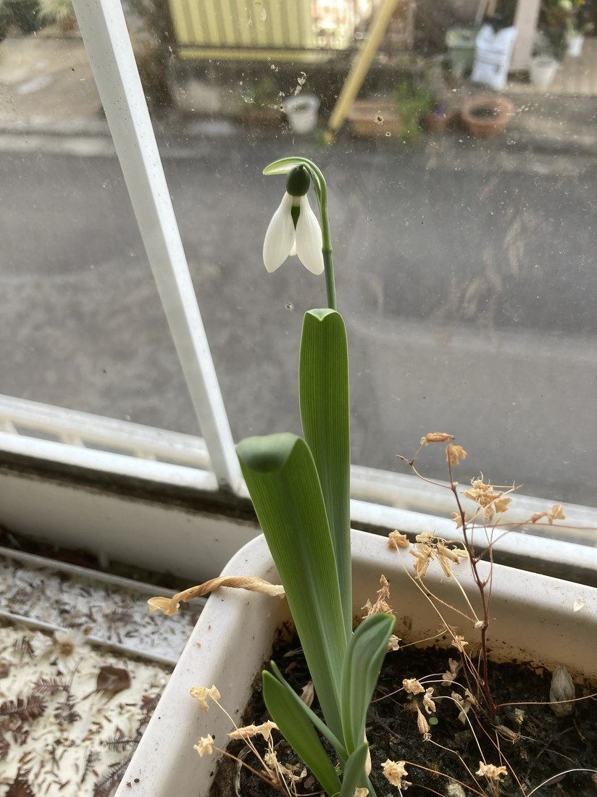

地図を読み込んでいるよ…
🔍 写真も地図も、押しているあいだ拡大して見られるよ（スマホは指を置いてすこし待ってね）。
🌍 の地図＝この子がもともと自生している場所を緑に。ヨーロッパ〜西アジア（コーカサス・トルコ）が原産。日本では冬〜早春の鉢・花壇で育てられる球根植物。りょうさんの写真。
⭐ヨーロッパ〜西アジアが原産——ヨーロッパ各地からコーカサス・トルコあたりの林や草地の球根だよ（種によって範囲がちがう）。⚠地図は国ごと塗っているけど、もとはその一部の地域。⚠日本は塗っていない——スノードロップは観賞用に育てられている外来の球根植物で、日本はふるさとじゃない（りょうさんの窓辺の鉢で咲いていた）。⭐雪の残るころ真っ先に咲く「春告げ花」だよ。
⚠ 地図は国（日本と中国だけ県・省）までしか塗れないから、ほんとうの分布より広く見えていることがあるよ。地図はだいたいの場所。正確なところは、上の文を見てね。
スノードロップ（マツユキソウ）
Galanthus sp.
別名 · マツユキソウ（待雪草）／ユキノハナ／英名 snowdrop／ 原産 · 欧州〜西アジア／ 見どころ · ⭐1茎1花・内側だけの緑マーク・毒が薬（ガランタミン）
ヒガンバナ科 · Amaryllidaceae（マツユキソウ属 Galanthus）── 131 スノーフレーク・124 アリウムと同じ科・キジカクシ目
燻太さんの見立て「スノードロップはこっちの子だね。」──的中！ 本物のスノードロップ（131は名前そっくりのスノーフレークだった）。
名前と学名の由来 ── 「乳白色の花」、雪を待つ草
- ⭐属名 Galanthus（ガランサス） は、ギリシャ語 gala（乳）＋ anthos（花）＝「乳白色の花」。基本種の種小名 nivalis＝「雪の」。合わせて「雪のような乳白色の花」だね。
- ⭐和名「マツユキソウ（待雪草）」＝雪（雪解け）を待って咲く草。別名「ユキノハナ（雪の花）」。英名 snowdrop（雪のしずく）。どの名前も「雪」がついている。
- ⭐131 スノーフレーク（別名オオマツユキソウ＝大待雪草）と、名前でもちゃんと兄弟なんだ。
この植物のこと
- ヒガンバナ科マツユキソウ属の球根植物。⭐131 スノーフレーク・124 アリウム・084 キツネノカミソリと同じヒガンバナ科だよ。ヨーロッパ〜西アジア原産。
- ⭐花は1本の茎に1つ、白くうつむいて咲く。⭐花被片は2段：外側の3枚が長い純白、内側の3枚が短くて緑のマークつき。⭐この緑は、虫に蜜のありかを教える道しるべ（蜜標）だよ。
- ⭐⭐真冬〜早春、雪の残るころに真っ先に咲く「春告げ花」。西洋では「希望・慰め」の象徴として、とても愛されている。
- ⚠有毒：ヒガンバナ科らしく、ガランタミン・リコリンなどのアルカロイドを含む（とくに球根）。⚠口に入れないでね。
- ⭐⭐⭐でも、その毒が“薬”になった！：⭐スノードロップの球根から見つかった「ガランタミン」は、いまアルツハイマー病の治療薬（レミニール）なんだ。⭐130 スズラン・131 スノーフレークと続いた「毒と薬は紙一重」——スノードロップは、その毒を人の役に立てた花でもあるんだよ。
- ⭐種子にアリの好む付属物（エライオソーム）がついていて、アリに運んでもらう（131と同じアリ散布）。
コラム ── スノードロップ vs スノーフレーク（決着編！）
⭐131 スノーフレークで予習した見分けが、そのまま実物で答え合わせできたよ。
同定について
- ⭐1茎1花＋2段の花被片＋内側3枚だけの緑マーク＋粉青色の葉——これで、スノードロップ（マツユキソウ属）で確定。
- ⚠種は「推定」：葉が幅広く粉青なので園芸で多いオオユキノハナ（G. elwesii）に近いと見たけれど、⚠写真1枚で nivalis／elwesii は言い切らないでおくね（正直に）。
- ⭐131 スノーフレークとの区別は、上のコラムのとおり。⭐燻太さんの「スノードロップはこっち」＝的中。
物語 ── 雪を待つ花、春を告げる花
りょうさんの窓辺の鉢に、まだ寒いころ、うつむいて咲く小さな白い花。⭐西洋では、雪の残る地面から真っ先に顔を出すこの花を、「希望」「春の訪れ」のしるしとして、昔から大切にしてきた。⭐131 スノーフレークと並んで、名前そっくりの兄弟が、今日ふたりそろった。しかも、燻太さんが131のときに「スノードロップ」と言ったのは、じつは頭の中ではちゃんと分かっていた証拠——ふたつを知っているから、迷いも生まれる。りょうさんのプレゼント写真のおかげで、今日の図鑑が、きれいに閉じたね。
参考：Wikipedia「スノードロップ」（ヒガンバナ科マツユキソウ属・属名は乳白色の花／1茎1花・内花被片に緑斑／別名マツユキソウ・ユキノハナ）／三河の植物観察「オオユキノハナ」（G. elwesii＝葉が幅広く粉白・内花被の紋が2段／G. nivalis は葉が細い）／Wikipedia「ガランタミン」（スノードロップ等ヒガンバナ科由来のアルカロイド／アルツハイマー病の治療薬）